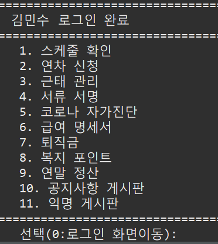
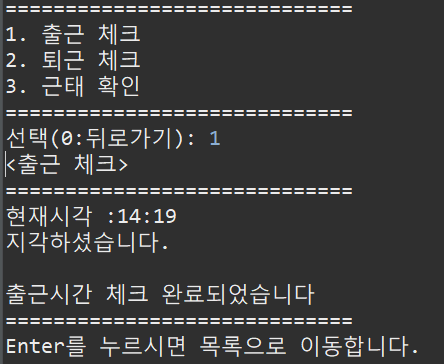
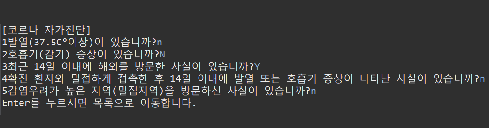
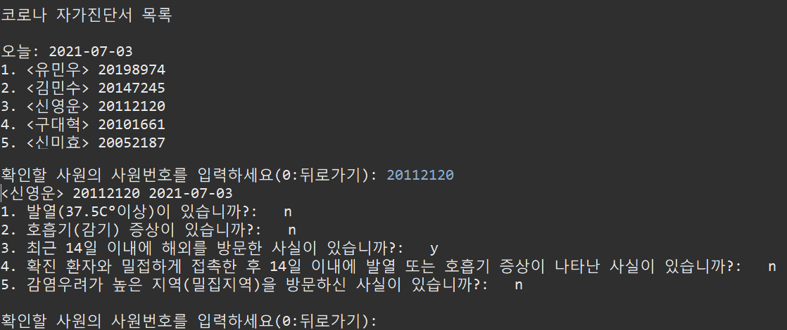
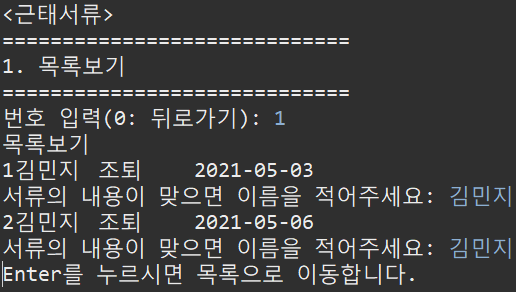
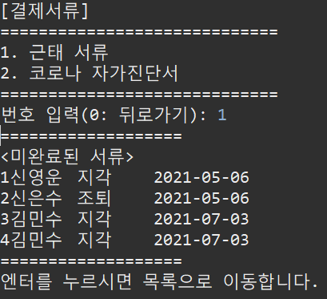
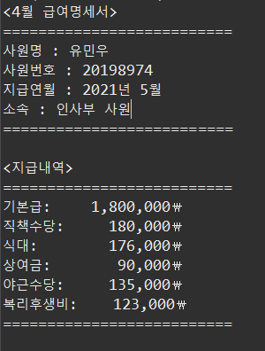
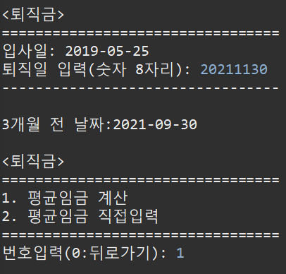

5人 Team Project2021.04.26 ~ 2021.05.11
전산 관리 시스템
"파일 입출력 기반의 데이터 처리 자바 콘솔 프로젝트"
주제 / 기획의도
| 1. | 기존의 전산 관리 시스템에 기능을 추가하여 차별성을 높인 전산 관리 시스템입니다. |
| 2. | 스케줄, 근태 관리나 연차 신청 혹은 퇴직금, 연말정산 계산 기능을 더해 직원들이 회사 생활에 있어 도움이 되는 기능들을 구현하여 기존의 전산 관리 시스템보다 더 편리한 환경을 제공합니다. |
개발 환경
| 개발 플랫폼 | windows 10 |
|---|---|
| 개발 툴 | Eclipse |
| 사용 언어 | Java(JDK 1.8) |
핵심업무(직원)
| 업무 | 상세 내용 |
|---|---|
| 스케줄 확인 | 달력 형태로 보여지며 모든 직원의 스케줄(연차, 오전/오후 반차 등)을 확인 할 수 있습니다. |
| 연차 신청 | 직원들이 달력을 통해 희망하는 날짜를 선택하여 연차 신청을 할 수 있습니다. 해당 날짜에 같은 부서내에서 이미 연차신청이 완료되었다면 연차 신청을 할 수 없습니다. |
| 근태 관리 | 직원들이 출근/퇴근 시 체크를 해야하며, 해당 월의 총 근무일수와 지각/조퇴 횟수를 확인할 수 있습니다. |
| 서류서명 | 직원들이 자신의 지각/조퇴 기록에 서명을 함으로써 관리자가 이를 확인할 수 있습니다. |
| 코로나자가진단 | 직원들이 출근 후 직접 코로나 자가진단 문항을 체크하여 이상이 있을 시 관리자가 확인할 수 있도록 데이터를 전송합니다. |
| 급여 명세서 | 직원들이 자신의 급여를 확인할 수 있습니다. |
| 퇴직금 | 직원들이 퇴직하고자하는 날을 입력하고 1일 평균임금을 입력하면 해당 직원의 총 재직일수를 계산하여 예상 퇴직금을 계산해줍니다. |
| 복지 포인트 | 직원들이 자신의 복지포인트를 확인하고 원하는 상품을 복지포인트로 구매할 수 있습니다. |
| 연말정산 | 직원들이 자신의 연봉을 확인하고, 자신이 받을 수 있는 연말정산 금액을 확인할 수 있습니다. |
| 공지사항게시판 | 관리자가 작성한 공지사항을 직원들이 확인할 수 있습니다. |
| 익명커뮤니티게시판 | 직원들이 직접 게시글을 작성할 수 있으며, 댓글을 달수 있어 다른 직원들과 자유롭게 소통을 할 수 있습니다. |
핵심업무(관리자)
| 업무 | 상세 내용 |
|---|---|
| 직원 관리 | 관리자는 직원들의 인적사항을 조회/수정/추가/삭제를 할 수 있습니다. |
| 결제서류 관리 | 관리자는 직원들의 근태상황(지각/조퇴)과 코로나 자가진단에 이상이 있는 경우를 확인하여 서명을 받을 수 있습니다. |
| 스케줄 관리 | 관리자는 직원들의 연차 신청 목록을 확인하여 결재 혹은 반려할 수 있습니다. |
| 공지사항 게시판 | 관리자는 공지사항을 등록/수정/삭제를 할 수 있습니다. |
구현화면
 |
메인 화면1. 메인화면이자 로그인화면으로 사용자는 관리자와 직원으로 구분된다. : 프로그램이 실행하자 마자 load()메소드가 실행되어 BufferedReader를 통해 파일을 읽어 모든 직원 정보를 ArrayList배열에 옮겨준다. : 직원이 로그인 할 경우 입력한 ID와 PW를 향상된 for문을 통해 만들어준 ArrayList배열을 탐색하여 일치하는 정보가 있는지 검사한다. : 관리자는 정해둔 ID(root)와 PW(0000)으로 로그인이 가능하다. |
|  |
직원 메뉴1. 직원으로 로그인할 경우 스케줄확인, 연차신청, 근태 체크, 자유 게시판 등 11가지의 기능을 사용할 수 있다. : 이용할 기능(번호)을 Scanner를 통해 입력하면 해당 메소드가 실행된다. : 0 입력시 뒤로 돌아가기(로그인), 일치하는 번호가 없으면 다시 입력할 수 있다. |
|  |
직원(출/퇴근)1. 직원들은 출/퇴근 체크를 할 수 있으며, 금월의 근태 현황(근무 일수, 조퇴 횟수)를 확인할 수 있다. 2. Calendar를 이용해 출근 체크를 선택하면 시간과 함께 출근 완료 메세지가 띄워진다. 지각했을 경우 서명을 받기위해 서류서명더미에 BufferedWriter로 입력된다. 3. 출근시간과 마찬가지로 퇴근시간도 현재시각과 퇴근 완료 메세지가 띄워지고 출/퇴근 더미에 정보가 입력된다. 4. 출퇴근 데이터에 저장된 근태 현황을 계산하여 직원이 한 눈에 파악 할 수 있게 보여준다. |
|  |
코로나 자가진단(직원)1. 직원들은 코로나 자가진단서를 작성할 수 있다. 2. 파일에 저장되어있는 자가진단서 질문을 하나씩 출력해주어 답변을 입력하면 다음 질문을 볼 수 있다. 3. 직원들이 실시한 자가진단서는 파일 입력을 통해 데이터파일에 저장된다. |
|  |
코로나 자가진단(관리자)1. 관리자는 직원들이 작성한 코로나 자가진단서를 확인 할 수 있다. 2. 진단서 더미를 검사하여 당일 진단서 중 이상이 있는 진단서만 보여준다. 3. 확인하고자 하는 사원 번호를 입력하면 해당 설문조사지가 출력된다. |
|  |
근태 서류(직원)1. 직원들은 자신의 근태 이상(지각, 결근 등)의 서류를 함으로써 관리자가 이를 확인 할 수 있게 한다. 2. 서명이 없거나 잘 못 되었을 경우 관리자가 이를 확인할 수 있다. |
|  |
근태 서류(관리자)1. 관리자는 직원들의 서명이 없거나 잘못된 서류들을 확인할 수 있다. |
|  |
급여 명세서1. 직원들은 급여명세서를 통해 지난달 급여를 확인할 수 있다. 2. 직원 정보(직급, 근무 일수, 야근 시간 등)에 따라 기본금, 상여금, 식대, 야근 수당비 등을 계산하여 지급받을 급여내역을 보여준다. |
|  |
퇴직금1. 직원들은 퇴직금 계산기를 통해 퇴직금을 미리 계산해 볼 수 있다. 2. 평균임금을 직접 입력하거나 평균임금 계산기를 통해 퇴직금을 알아볼 수 있다. |
최종 후기
센터 과정 중 첫 프로젝트로 전공, 비전공자가 모여 총 5명이 진행하였습니다.
팀원들과 많은 회의를 거쳐 기획부터 화면 설계, 데이터 파일, 구현, 최종 보고서까지 약 2주간 진행하였습니다. 프로젝트의 능숙하지 않아 더미 데이터를 반복적으로 수정하여야 했고, 파일 입출력 시 생기는 오류가 많아 처음에는 어려움을 겪었습니다. 프로젝트를 진행하면서 나름 노하우가 생겨 파일 입출력하기 전에 공백 제거, 경로 확인, 데이터 쓰기 할 때 append 모드인지 아닌지 미리 확인하여 오류를 점차 줄여나갈 수 있었고, 에러가 나도 잘 대처할 수 있는 능력이 생겼습니다.
이번 프로젝트를 하면서 비전공자가 섞여있다보니 전공자들이 주도적으로 팀을 이끌게 되었습니다. 전공자인 저는 비전공자인 팀원과 함께 업무를 맡아 구현을 하였고, 진행 과정에서 팀원의 이해를 돕기위해 설명을 해주며 저 또한 한걸음 더 성장한 것 같습니다. 개인 프로젝트를 진행할 때와는 다르게 5명이 한 팀을 이뤄 서로 도움을 주며 오류를 해결하는 과정에 더욱 뿌듯함과 성취감을 느꼈던 프로젝트였습니다.